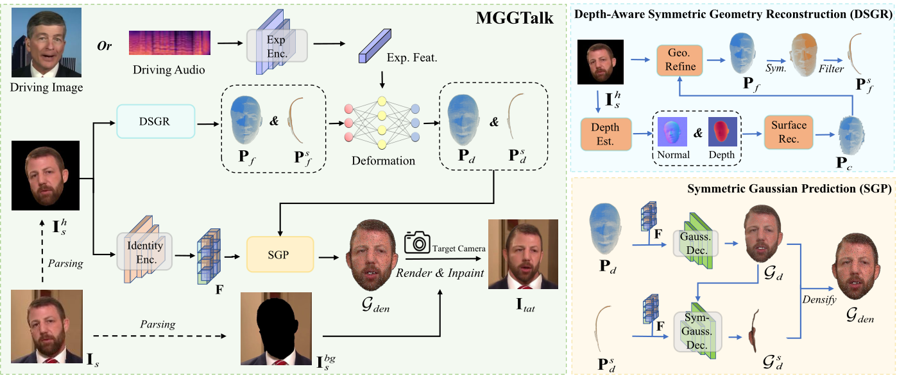

In this work, we introduce Monocular and Generalizable Gaussian Talking Head Animation (MGGTalk), which requires monocular datasets and generalizes to unseen identities without personalized re-training. Compared with previous 3D Gaussian Splatting (3DGS) methods that requires elusive multi-view datasets or tedious personalized learning/inference, MGGtalk enables more practical and broader applications. However, in the absence of multi-view and personalized training data, the incompleteness of geometric and appearance information poses a significant challenge. To address these challenges, MGGTalk explores depth information to enhance geometric and facial symmetry characteristics to supplement both geometric and appearance features. Initially, based on the pixel-wise geometric information obtained from depth estimation, we incorporate symmetry operations and point cloud filtering techniques to ensure a complete and precise position parameter for 3DGS. Subsequently, we adopt a two-stage strategy with symmetric priors for predicting the remaining 3DGS parameters. We begin by predicting Gaussian parameters for the visible facial regions of the source image. These parameters are subsequently utilized to improve the prediction of Gaussian parameters for the non-visible regions. Extensive experiments demonstrate that MGGTalk surpasses previous state-of-the-art methods, achieving superior performance across various metrics.
The inference process of MGGTalk is shown as follows:
To show the overall performance of MGGTalk, we provide demos...
@inproceedings{yourpaper2024,
author = {...},
title = {Your Paper Title},
booktitle = {Conference Name},
year = {2024},
}